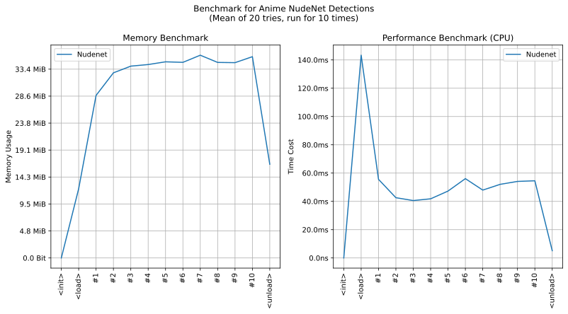

imgutils.detect.nudenet
- Overview:
This module provides functionality for detecting nudity in images using the NudeNet model.
The module includes functions for preprocessing images, running the NudeNet YOLO model, applying non-maximum suppression (NMS), and postprocessing the results. It utilizes ONNX models hosted on deepghs/nudenet_onnx for efficient inference. The original project is notAI-tech/NudeNet.
Overview of NudeNet Detect (NSFW Warning!!!)

The main function
detect_with_nudenet()can be used to perform nudity detection on given images, returning a list of bounding boxes, labels, and confidence scores.This is an overall benchmark of all the nudenet models:
Note
Here is a detailed list of labels from the NudeNet detection model and their respective meanings:
Label
Description
FEMALE_GENITALIA_COVERED
Detects covered female genitalia in the image.
FACE_FEMALE
Detects the face of a female in the image.
BUTTOCKS_EXPOSED
Detects exposed buttocks in the image.
FEMALE_BREAST_EXPOSED
Detects exposed female breasts in the image.
FEMALE_GENITALIA_EXPOSED
Detects exposed female genitalia in the image.
MALE_BREAST_EXPOSED
Detects exposed male breasts in the image.
ANUS_EXPOSED
Detects exposed anus in the image.
FEET_EXPOSED
Detects exposed feet in the image.
BELLY_COVERED
Detects a covered belly in the image.
FEET_COVERED
Detects covered feet in the image.
ARMPITS_COVERED
Detects covered armpits in the image.
ARMPITS_EXPOSED
Detects exposed armpits in the image.
FACE_MALE
Detects the face of a male in the image.
BELLY_EXPOSED
Detects an exposed belly in the image.
MALE_GENITALIA_EXPOSED
Detects exposed male genitalia in the image.
ANUS_COVERED
Detects a covered anus in the image.
FEMALE_BREAST_COVERED
Detects covered female breasts in the image.
BUTTOCKS_COVERED
Detects covered buttocks in the image.
Note
This module requires onnxruntime version 1.18 or higher.
detect_with_nudenet
- imgutils.detect.nudenet.detect_with_nudenet(image: str | PathLike | bytes | bytearray | BinaryIO | Image, topk: int = 100, iou_threshold: float = 0.45, score_threshold: float = 0.25) List[Tuple[Tuple[int, int, int, int], str, float]][source]
Detect nudity in the given image using the NudeNet model.
- Parameters:
image – The input image to analyze.
topk – The maximum number of detections to keep (default: 100).
iou_threshold – The IoU threshold for NMS (default: 0.45).
score_threshold – The score threshold for detections (default: 0.25).
- Returns:
A list of tuples, each containing:
A bounding box as (x1, y1, x2, y2)
A label string
A confidence score